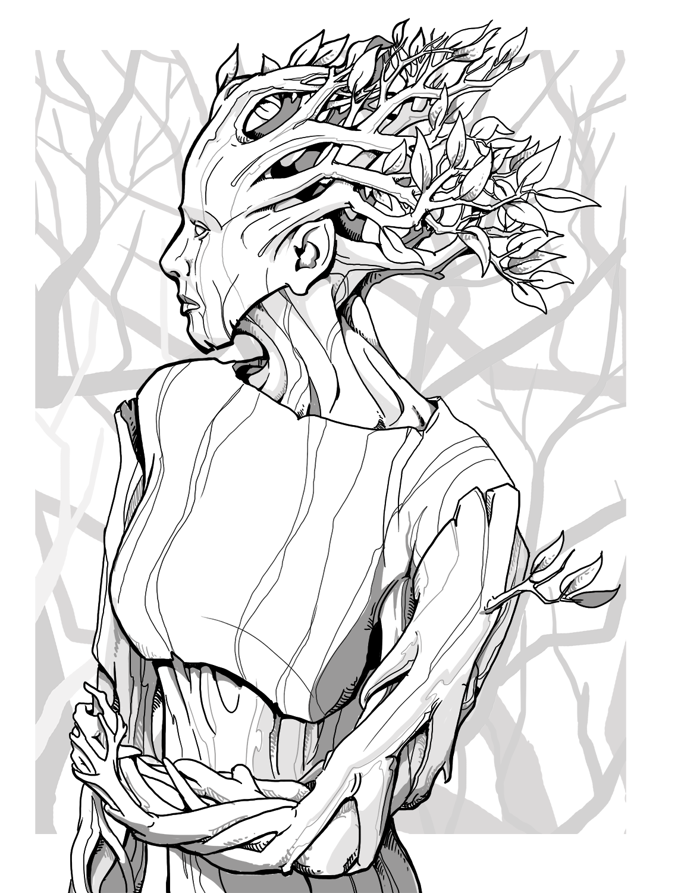

Complete Monster
by
Radaghast Kary
← Dry Lich
↑Index↑
Dryad Queen →

Illustration by Mariana Ruiz Villarreal,
Public Domain
Dryad
Members:
Dryad Queen
Duskthorn Dryad
5e
TN
D&D 5 facts
Size: Medium
Type:
Fey
CR: 1
D&D 5 sources
Monster Manual
, p. 121
Xanathar’s Guide to Everything
, p. 97
D&D 5 links
Dryad in 5e d20 SRD
Dryad on AideD&D
4e
D&D 4 facts
Level: 9
Type: Skirmisher
XP: 400
Entry: Dryad
D&D 4 sources
Monster Manual
, p. 96
D&D 4 links
Dryad on D&D Insider
3e
Pathfinder 2 facts
Family:
Nymph
Level: 3
Pathfinder 2 sources
Bestiary
Pathfinder 2 links
Dryad Monster in Pathfinder 2 SRD
CG
Pathfinder facts
CR: 3
XP: 800
Size: Medium
Type:
Fey
Initiative: +4
Senses: low-light vision
AC: 17, touch 14, flat-footed 13 (+4 Dex, +3 natural)
HP: 27 (6d6+6)
Saves: Fort +5, Ref +9, Will +7
Speed: 30 ft.
Melee: dagger +7 (1d4)
Abilities: Str 10, Dex 19, Con 13, Int 14, Wis 15, Cha 18
Attacks: Base Atk +3; CMB +3; CMD 17
Defenses: DR 5/cold iron
Feats: Great Fortitude, Stealthy, Weapon Finesse
Skills: Climb +9, Craft (sculpture) +11, Escape Artist +15, Handle Animal +10, Knowledge (nature) +11, Perception +11, Stealth +15, Survival +8; Racial Modifiers +6 Craft (wood)
Languages: Common, Elven, Sylvan; speak with plants
Organization: solitary, pair, or grove (3–8)
Treasure: standard (dagger, masterwork longbow with 20 arrows, other treasure)
Pathfinder sources
Bestiary
Pathfinder links
Dryad in Pathfinder 1 SRD
D&D 3.5 facts
Type:
Fey
Size: Medium
CR: 3
D&D 3.5 sources
Monster Manual
, p. 90
D&D 3.5 links
Dryad in 3.5e d20 SRD
CG
D&D 3.0 facts
Abilities: Str 10, Dex 15, Con 11, Int 14, Wis 15, Cha 18
AC: 12 (+2 Dex)
Advancement: 3-4 HD (Medium-size)
Attacks: Dagger +1 melee
CR: 1
Damage: Dagger 1d4
HD: 2d6 (7)
Initiative: +6 (+2 Dex, +4 Improved Initiative)
Organization: Solitary or grove (4-7)
Qualities: Symbiosis
Reach: 5 ft. by 5 ft./5 ft.
Saves: Fort +0, Ref +5, Will +5
Size: Medium
Skills: Animal Empathy +9, Craft (any one) or Knowledge (any one)+6, Escape Artist +7, Hide +7, Listen +9, Move Silently +7, Sense Motive +7, Spot +9, Wilderness Lore +7
Speed: 30 ft.
Terrain: Temperate and warm forest
Treasure: Standard
Type:
Fey
D&D 3.0 links
Dryad in 3.0 d20 SRD
0e
N
S&W
facts
AC: [10]
Attacks: wooden dagger (1d3)
HD: 2
HDE: 3
Move: 4
Special: Charm Person
XP: 60
S&W
sources
The Blue Book of Dangers and Dweomers
, p. 83
OD&D facts
Number Appearing: 1-6
AC: 5
Move: 12
HD: 2
Chance in Lair: 20%
Treasure: Type D
OD&D sources
Monsters & Treasure
, p. 4
{kind=link}